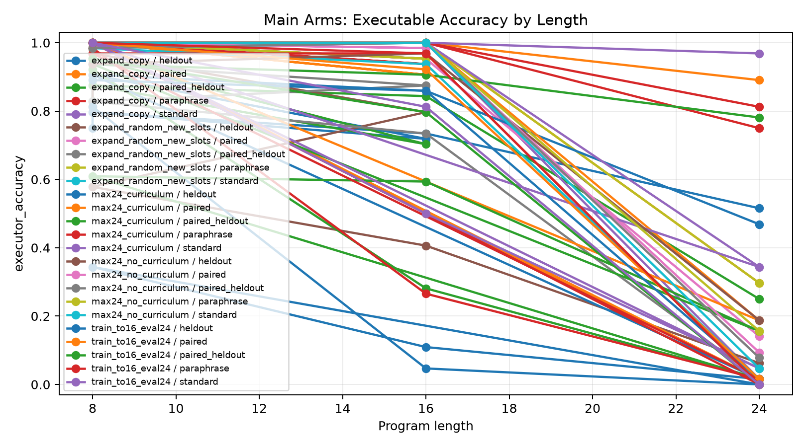
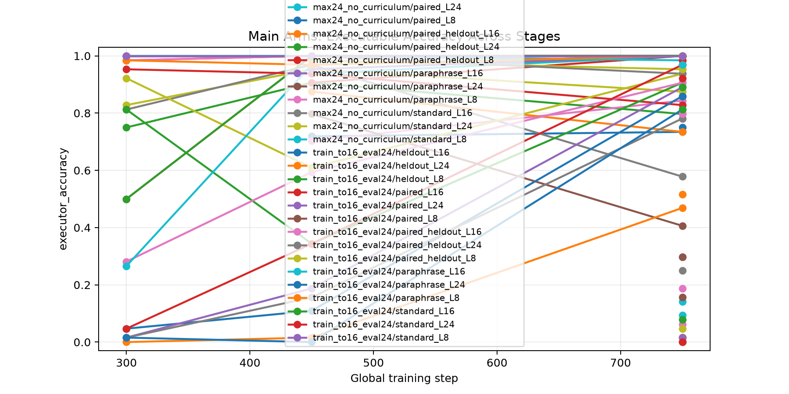
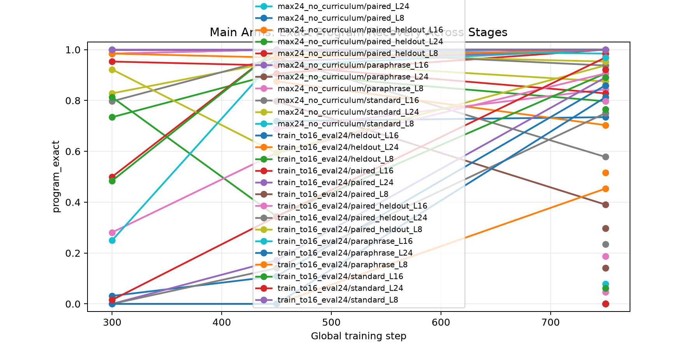
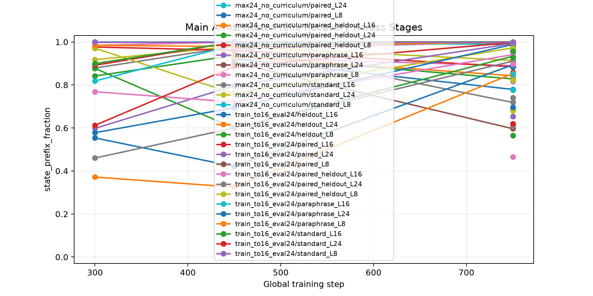
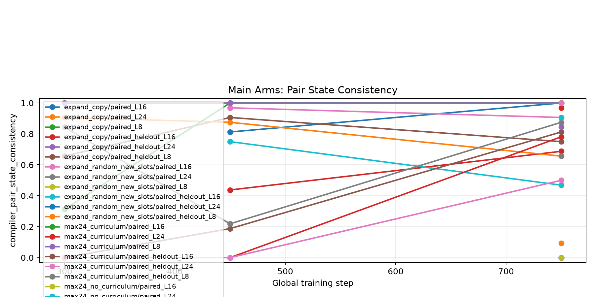
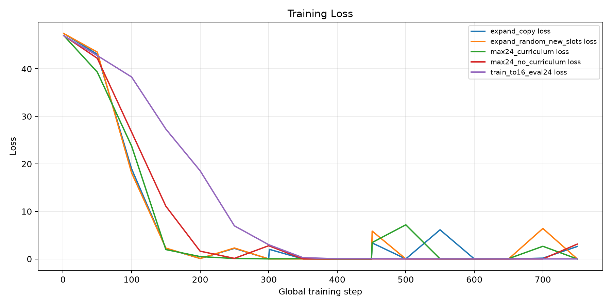
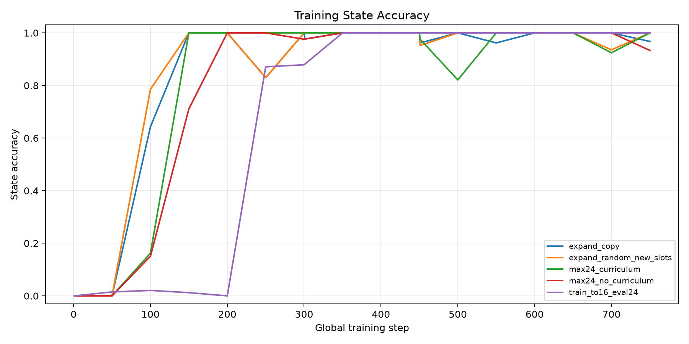

Which factor causes a one-shot executable latent compiler to learn length-24 modular programs: copied structural expansion, curriculum alone, random-slot expansion, no-curriculum training, or length extrapolation?
Every arm uses a Qwen causal LM plus a direct executable compiler head.
The compiler predicts one initial value plus typed operation and argument slots.
A differentiable modular executor supervises final answer probability and intermediate state traces.
The main controls separate copied structural expansion from curriculum, random new slots, no-curriculum training, and length extrapolation.
Evaluation includes standard templates, seen-family paraphrases, held-out wording templates, and paired consistency splits.
| run | arm | elapsed_sec | model | stage_max_steps | stage_steps | train_examples | gpu |
|---|---|---|---|---|---|---|---|
| main_expand_copy_s750 | expand_copy | 1914 | Qwen/Qwen3-4B | 8,16,24 | 300,150,300 | 512 | NVIDIA RTX 6000 Ada Generation |
| main_expand_random_new_slots_s750 | expand_random_new_slots | 1915 | Qwen/Qwen3-4B | 8,16,24 | 300,150,300 | 512 | NVIDIA RTX 6000 Ada Generation |
| main_max24_curriculum_s750 | max24_curriculum | 2726 | Qwen/Qwen3-4B | 24,24,24 | 300,150,300 | 512 | NVIDIA RTX 6000 Ada Generation |
| main_max24_no_curriculum_s750 | max24_no_curriculum | 2697 | Qwen/Qwen3-4B | 24 | 750 | 512 | NVIDIA RTX 6000 Ada Generation |
| main_train_to16_eval24_s750 | train_to16_eval24 | 2442 | Qwen/Qwen3-4B | 24 | 750 | 512 | NVIDIA RTX 6000 Ada Generation |
| pilot_expand_copy | expand_copy | 105.5 | Qwen/Qwen3-4B | 8,16,24 | 30,15,30 | 96 | NVIDIA RTX 6000 Ada Generation |
| pilot_expand_random_new_slots | expand_random_new_slots | 106.3 | Qwen/Qwen3-4B | 8,16,24 | 30,15,30 | 96 | NVIDIA RTX 6000 Ada Generation |
| pilot_max24_curriculum | max24_curriculum | 157 | Qwen/Qwen3-4B | 24,24,24 | 30,15,30 | 96 | NVIDIA RTX 6000 Ada Generation |
| pilot_max24_no_curriculum | max24_no_curriculum | 134.7 | Qwen/Qwen3-4B | 24 | 75 | 96 | NVIDIA RTX 6000 Ada Generation |
| pilot_train_to16_eval24 | train_to16_eval24 | 125.3 | Qwen/Qwen3-4B | 24 | 75 | 96 | NVIDIA RTX 6000 Ada Generation |
| smoke_random_new_slots | smoke_random_new_slots | 10.16 | Qwen/Qwen3-4B | 8,16,24 | 1,1,1 | 4 | NVIDIA RTX 6000 Ada Generation |
Attribution summary, final length-24 executable accuracy:
| arm | run | standard_L24 | heldout_L24 | paired_L24 | paired_heldout_L24 |
|---|---|---|---|---|---|
| max24_curriculum | main_max24_curriculum_s750 | 96.9% | 46.9% | 89.1% | 78.1% |
| max24_no_curriculum | main_max24_no_curriculum_s750 | 4.7% | 18.8% | 9.4% | 7.8% |
| expand_copy | main_expand_copy_s750 | 1.6% | 51.6% | 29.7% | 25.0% |
| expand_random_new_slots | main_expand_random_new_slots_s750 | 1.6% | 6.2% | 14.1% | 1.6% |
| train_to16_eval24 | main_train_to16_eval24_s750 | 0.0% | 1.6% | 1.6% | 0.0% |
The strongest arm is the max-24 compiler trained from the start with the staged length curriculum. Copied structural expansion is not the winning explanation in this run.
Final length-24 splits by arm:
| arm | run | split | executor_accuracy | program_exact | state_prefix_fraction | executor_pair_both_correct | compiler_pair_state_consistency |
|---|---|---|---|---|---|---|---|
| expand_copy | main_expand_copy_s750 | standard_L24 | 1.6% | 0.0% | 85.9% | ||
| expand_copy | main_expand_copy_s750 | paraphrase_L24 | 75.0% | 75.0% | 97.3% | ||
| expand_copy | main_expand_copy_s750 | heldout_L24 | 51.6% | 51.6% | 68.6% | ||
| expand_copy | main_expand_copy_s750 | paired_L24 | 29.7% | 29.7% | 91.0% | 0.0% | 9.4% |
| expand_copy | main_expand_copy_s750 | paired_heldout_L24 | 25.0% | 23.4% | 74.1% | 3.1% | 0.0% |
| expand_random_new_slots | main_expand_random_new_slots_s750 | standard_L24 | 1.6% | 0.0% | 67.9% | ||
| expand_random_new_slots | main_expand_random_new_slots_s750 | paraphrase_L24 | 29.7% | 29.7% | 85.6% | ||
| expand_random_new_slots | main_expand_random_new_slots_s750 | heldout_L24 | 6.2% | 4.7% | 46.5% | ||
| expand_random_new_slots | main_expand_random_new_slots_s750 | paired_L24 | 14.1% | 14.1% | 77.5% | 0.0% | 0.0% |
| expand_random_new_slots | main_expand_random_new_slots_s750 | paired_heldout_L24 | 1.6% | 0.0% | 56.6% | 0.0% | 0.0% |
| max24_curriculum | main_max24_curriculum_s750 | standard_L24 | 96.9% | 96.9% | 99.7% | ||
| max24_curriculum | main_max24_curriculum_s750 | paraphrase_L24 | 81.2% | 81.2% | 98.8% | ||
| max24_curriculum | main_max24_curriculum_s750 | heldout_L24 | 46.9% | 45.3% | 85.3% | ||
| max24_curriculum | main_max24_curriculum_s750 | paired_L24 | 89.1% | 89.1% | 99.3% | 78.1% | 78.1% |
| max24_curriculum | main_max24_curriculum_s750 | paired_heldout_L24 | 78.1% | 75.0% | 91.1% | 56.2% | 50.0% |
| max24_no_curriculum | main_max24_no_curriculum_s750 | standard_L24 | 4.7% | 0.0% | 82.2% | ||
| max24_no_curriculum | main_max24_no_curriculum_s750 | paraphrase_L24 | 15.6% | 14.1% | 89.1% | ||
| max24_no_curriculum | main_max24_no_curriculum_s750 | heldout_L24 | 18.8% | 18.8% | 81.6% | ||
| max24_no_curriculum | main_max24_no_curriculum_s750 | paired_L24 | 9.4% | 7.8% | 84.9% | 0.0% | 0.0% |
| max24_no_curriculum | main_max24_no_curriculum_s750 | paired_heldout_L24 | 7.8% | 6.2% | 82.4% | 0.0% | 0.0% |
| train_to16_eval24 | main_train_to16_eval24_s750 | standard_L24 | 0.0% | 0.0% | 62.0% | ||
| train_to16_eval24 | main_train_to16_eval24_s750 | paraphrase_L24 | 0.0% | 0.0% | 69.6% | ||
| train_to16_eval24 | main_train_to16_eval24_s750 | heldout_L24 | 1.6% | 0.0% | 61.9% | ||
| train_to16_eval24 | main_train_to16_eval24_s750 | paired_L24 | 1.6% | 0.0% | 65.3% | 0.0% | 0.0% |
| train_to16_eval24 | main_train_to16_eval24_s750 | paired_heldout_L24 | 0.0% | 0.0% | 60.7% | 0.0% | 0.0% |
| arm | run | stage | split | global_step | max_steps | executor_accuracy | program_exact | state_prefix_fraction | state_all_exact | executor_pair_both_correct | compiler_pair_state_consistency | length |
|---|---|---|---|---|---|---|---|---|---|---|---|---|
| expand_copy | main_expand_copy_s750 | stage1_max8 | heldout_L8 | 300 | 8 | 75.0% | 73.4% | 84.2% | 0.7344 | 8 | ||
| expand_copy | main_expand_copy_s750 | stage1_max8 | paired_L8 | 300 | 8 | 100.0% | 100.0% | 100.0% | 1 | 100.0% | 100.0% | 8 |
| expand_copy | main_expand_copy_s750 | stage1_max8 | paired_heldout_L8 | 300 | 8 | 82.8% | 82.8% | 91.8% | 0.8281 | 65.6% | 65.6% | 8 |
| expand_copy | main_expand_copy_s750 | stage1_max8 | paraphrase_L8 | 300 | 8 | 98.4% | 98.4% | 98.4% | 0.9844 | 8 | ||
| expand_copy | main_expand_copy_s750 | stage1_max8 | standard_L8 | 300 | 8 | 100.0% | 100.0% | 100.0% | 1 | 8 | ||
| expand_copy | main_expand_copy_s750 | stage2_max16 | heldout_L8 | 450 | 16 | 90.6% | 90.6% | 93.8% | 0.9062 | 8 | ||
| expand_copy | main_expand_copy_s750 | stage2_max16 | paired_L8 | 450 | 16 | 100.0% | 100.0% | 100.0% | 1 | 100.0% | 100.0% | 8 |
| expand_copy | main_expand_copy_s750 | stage2_max16 | paired_heldout_L8 | 450 | 16 | 95.3% | 95.3% | 97.9% | 0.9531 | 90.6% | 90.6% | 8 |
| expand_copy | main_expand_copy_s750 | stage2_max16 | paraphrase_L8 | 450 | 16 | 100.0% | 100.0% | 100.0% | 1 | 8 | ||
| expand_copy | main_expand_copy_s750 | stage2_max16 | standard_L8 | 450 | 16 | 100.0% | 100.0% | 100.0% | 1 | 8 | ||
| expand_copy | main_expand_copy_s750 | stage2_max16 | heldout_L16 | 450 | 16 | 71.9% | 71.9% | 92.2% | 0.7188 | 16 | ||
| expand_copy | main_expand_copy_s750 | stage2_max16 | paired_L16 | 450 | 16 | 90.6% | 90.6% | 98.3% | 0.9062 | 81.2% | 81.2% | 16 |
| expand_copy | main_expand_copy_s750 | stage2_max16 | paired_heldout_L16 | 450 | 16 | 70.3% | 68.8% | 92.8% | 0.6875 | 46.9% | 43.8% | 16 |
| expand_copy | main_expand_copy_s750 | stage2_max16 | paraphrase_L16 | 450 | 16 | 93.8% | 93.8% | 99.5% | 0.9375 | 16 | ||
| expand_copy | main_expand_copy_s750 | stage2_max16 | standard_L16 | 450 | 16 | 95.3% | 95.3% | 98.5% | 0.9531 | 16 | ||
| expand_copy | main_expand_copy_s750 | stage3_max24 | heldout_L8 | 750 | 24 | 79.7% | 79.7% | 82.8% | 0.7969 | 8 | ||
| expand_copy | main_expand_copy_s750 | stage3_max24 | paired_L8 | 750 | 24 | 100.0% | 100.0% | 100.0% | 1 | 100.0% | 100.0% | 8 |
| expand_copy | main_expand_copy_s750 | stage3_max24 | paired_heldout_L8 | 750 | 24 | 87.5% | 87.5% | 91.4% | 0.875 | 75.0% | 75.0% | 8 |
| expand_copy | main_expand_copy_s750 | stage3_max24 | paraphrase_L8 | 750 | 24 | 100.0% | 100.0% | 100.0% | 1 | 8 | ||
| expand_copy | main_expand_copy_s750 | stage3_max24 | standard_L8 | 750 | 24 | 100.0% | 100.0% | 100.0% | 1 | 8 | ||
| expand_copy | main_expand_copy_s750 | stage3_max24 | heldout_L16 | 750 | 24 | 73.4% | 73.4% | 77.9% | 0.7344 | 16 | ||
| expand_copy | main_expand_copy_s750 | stage3_max24 | paired_L16 | 750 | 24 | 100.0% | 100.0% | 100.0% | 1 | 100.0% | 100.0% | 16 |
| expand_copy | main_expand_copy_s750 | stage3_max24 | paired_heldout_L16 | 750 | 24 | 84.4% | 84.4% | 89.0% | 0.8438 | 68.8% | 68.8% | 16 |
| expand_copy | main_expand_copy_s750 | stage3_max24 | paraphrase_L16 | 750 | 24 | 100.0% | 100.0% | 100.0% | 1 | 16 | ||
| expand_copy | main_expand_copy_s750 | stage3_max24 | standard_L16 | 750 | 24 | 100.0% | 100.0% | 100.0% | 1 | 16 | ||
| expand_copy | main_expand_copy_s750 | stage3_max24 | heldout_L24 | 750 | 24 | 51.6% | 51.6% | 68.6% | 0.5156 | 24 | ||
| expand_copy | main_expand_copy_s750 | stage3_max24 | paired_L24 | 750 | 24 | 29.7% | 29.7% | 91.0% | 0.2969 | 0.0% | 9.4% | 24 |
| expand_copy | main_expand_copy_s750 | stage3_max24 | paired_heldout_L24 | 750 | 24 | 25.0% | 23.4% | 74.1% | 0.2344 | 3.1% | 0.0% | 24 |
| expand_copy | main_expand_copy_s750 | stage3_max24 | paraphrase_L24 | 750 | 24 | 75.0% | 75.0% | 97.3% | 0.75 | 24 | ||
| expand_copy | main_expand_copy_s750 | stage3_max24 | standard_L24 | 750 | 24 | 1.6% | 0.0% | 85.9% | 0 | 24 | ||
| expand_random_new_slots | main_expand_random_new_slots_s750 | stage1_max8 | heldout_L8 | 300 | 8 | 81.2% | 79.7% | 87.9% | 0.8125 | 8 | ||
| expand_random_new_slots | main_expand_random_new_slots_s750 | stage1_max8 | paired_L8 | 300 | 8 | 100.0% | 100.0% | 100.0% | 1 | 100.0% | 100.0% | 8 |
| expand_random_new_slots | main_expand_random_new_slots_s750 | stage1_max8 | paired_heldout_L8 | 300 | 8 | 95.3% | 95.3% | 97.7% | 0.9531 | 90.6% | 90.6% | 8 |
| expand_random_new_slots | main_expand_random_new_slots_s750 | stage1_max8 | paraphrase_L8 | 300 | 8 | 98.4% | 98.4% | 98.4% | 0.9844 | 8 | ||
| expand_random_new_slots | main_expand_random_new_slots_s750 | stage1_max8 | standard_L8 | 300 | 8 | 100.0% | 100.0% | 100.0% | 1 | 8 | ||
| expand_random_new_slots | main_expand_random_new_slots_s750 | stage2_max16 | heldout_L8 | 450 | 16 | 96.9% | 96.9% | 97.9% | 0.9688 | 8 | ||
| expand_random_new_slots | main_expand_random_new_slots_s750 | stage2_max16 | paired_L8 | 450 | 16 | 100.0% | 100.0% | 100.0% | 1 | 100.0% | 100.0% | 8 |
| expand_random_new_slots | main_expand_random_new_slots_s750 | stage2_max16 | paired_heldout_L8 | 450 | 16 | 93.8% | 93.8% | 96.1% | 0.9375 | 87.5% | 87.5% | 8 |
| expand_random_new_slots | main_expand_random_new_slots_s750 | stage2_max16 | paraphrase_L8 | 450 | 16 | 100.0% | 100.0% | 100.0% | 1 | 8 | ||
| expand_random_new_slots | main_expand_random_new_slots_s750 | stage2_max16 | standard_L8 | 450 | 16 | 100.0% | 100.0% | 100.0% | 1 | 8 | ||
| expand_random_new_slots | main_expand_random_new_slots_s750 | stage2_max16 | heldout_L16 | 450 | 16 | 79.7% | 79.7% | 90.4% | 0.7969 | 16 | ||
| expand_random_new_slots | main_expand_random_new_slots_s750 | stage2_max16 | paired_L16 | 450 | 16 | 98.4% | 98.4% | 98.7% | 0.9844 | 96.9% | 96.9% | 16 |
| expand_random_new_slots | main_expand_random_new_slots_s750 | stage2_max16 | paired_heldout_L16 | 450 | 16 | 87.5% | 87.5% | 93.4% | 0.875 | 75.0% | 75.0% | 16 |
| expand_random_new_slots | main_expand_random_new_slots_s750 | stage2_max16 | paraphrase_L16 | 450 | 16 | 95.3% | 95.3% | 96.9% | 0.9531 | 16 | ||
| expand_random_new_slots | main_expand_random_new_slots_s750 | stage2_max16 | standard_L16 | 450 | 16 | 100.0% | 100.0% | 100.0% | 1 | 16 | ||
| expand_random_new_slots | main_expand_random_new_slots_s750 | stage3_max24 | heldout_L8 | 750 | 24 | 57.8% | 57.8% | 71.9% | 0.5781 | 8 | ||
| expand_random_new_slots | main_expand_random_new_slots_s750 | stage3_max24 | paired_L8 | 750 | 24 | 100.0% | 100.0% | 100.0% | 1 | 100.0% | 100.0% | 8 |
| expand_random_new_slots | main_expand_random_new_slots_s750 | stage3_max24 | paired_heldout_L8 | 750 | 24 | 82.8% | 82.8% | 88.5% | 0.8281 | 65.6% | 65.6% | 8 |
| expand_random_new_slots | main_expand_random_new_slots_s750 | stage3_max24 | paraphrase_L8 | 750 | 24 | 100.0% | 100.0% | 100.0% | 1 | 8 | ||
| expand_random_new_slots | main_expand_random_new_slots_s750 | stage3_max24 | standard_L8 | 750 | 24 | 98.4% | 98.4% | 98.8% | 0.9844 | 8 | ||
| expand_random_new_slots | main_expand_random_new_slots_s750 | stage3_max24 | heldout_L16 | 750 | 24 | 40.6% | 39.1% | 59.7% | 0.4062 | 16 | ||
| expand_random_new_slots | main_expand_random_new_slots_s750 | stage3_max24 | paired_L16 | 750 | 24 | 95.3% | 95.3% | 99.3% | 0.9531 | 90.6% | 90.6% | 16 |
| expand_random_new_slots | main_expand_random_new_slots_s750 | stage3_max24 | paired_heldout_L16 | 750 | 24 | 73.4% | 70.3% | 84.3% | 0.7188 | 50.0% | 46.9% | 16 |
| expand_random_new_slots | main_expand_random_new_slots_s750 | stage3_max24 | paraphrase_L16 | 750 | 24 | 100.0% | 100.0% | 100.0% | 1 | 16 | ||
| expand_random_new_slots | main_expand_random_new_slots_s750 | stage3_max24 | standard_L16 | 750 | 24 | 93.8% | 93.8% | 99.1% | 0.9375 | 16 | ||
| expand_random_new_slots | main_expand_random_new_slots_s750 | stage3_max24 | heldout_L24 | 750 | 24 | 6.2% | 4.7% | 46.5% | 0.04688 | 24 | ||
| expand_random_new_slots | main_expand_random_new_slots_s750 | stage3_max24 | paired_L24 | 750 | 24 | 14.1% | 14.1% | 77.5% | 0.1406 | 0.0% | 0.0% | 24 |
| expand_random_new_slots | main_expand_random_new_slots_s750 | stage3_max24 | paired_heldout_L24 | 750 | 24 | 1.6% | 0.0% | 56.6% | 0 | 0.0% | 0.0% | 24 |
| expand_random_new_slots | main_expand_random_new_slots_s750 | stage3_max24 | paraphrase_L24 | 750 | 24 | 29.7% | 29.7% | 85.6% | 0.2969 | 24 | ||
| expand_random_new_slots | main_expand_random_new_slots_s750 | stage3_max24 | standard_L24 | 750 | 24 | 1.6% | 0.0% | 67.9% | 0 | 24 | ||
| max24_curriculum | main_max24_curriculum_s750 | stage1_max24 | heldout_L8 | 300 | 24 | 81.2% | 81.2% | 87.7% | 0.8125 | 8 | ||
| max24_curriculum | main_max24_curriculum_s750 | stage1_max24 | paired_L8 | 300 | 24 | 100.0% | 100.0% | 100.0% | 1 | 100.0% | 100.0% | 8 |
| max24_curriculum | main_max24_curriculum_s750 | stage1_max24 | paired_heldout_L8 | 300 | 24 | 92.2% | 92.2% | 97.1% | 0.9219 | 84.4% | 84.4% | 8 |
| max24_curriculum | main_max24_curriculum_s750 | stage1_max24 | paraphrase_L8 | 300 | 24 | 98.4% | 98.4% | 98.4% | 0.9844 | 8 | ||
| max24_curriculum | main_max24_curriculum_s750 | stage1_max24 | standard_L8 | 300 | 24 | 100.0% | 100.0% | 100.0% | 1 | 8 | ||
| max24_curriculum | main_max24_curriculum_s750 | stage1_max24 | heldout_L16 | 300 | 24 | 4.7% | 3.1% | 55.4% | 0.03125 | 16 | ||
| max24_curriculum | main_max24_curriculum_s750 | stage1_max24 | paired_L16 | 300 | 24 | 50.0% | 50.0% | 89.2% | 0.5 | 31.2% | 31.2% | 16 |
| max24_curriculum | main_max24_curriculum_s750 | stage1_max24 | paired_heldout_L16 | 300 | 24 | 28.1% | 28.1% | 76.9% | 0.2812 | 0.0% | 0.0% | 16 |
| max24_curriculum | main_max24_curriculum_s750 | stage1_max24 | paraphrase_L16 | 300 | 24 | 26.6% | 25.0% | 81.8% | 0.25 | 16 | ||
| max24_curriculum | main_max24_curriculum_s750 | stage1_max24 | standard_L16 | 300 | 24 | 50.0% | 48.4% | 89.9% | 0.4844 | 16 | ||
| max24_curriculum | main_max24_curriculum_s750 | stage1_max24 | heldout_L24 | 300 | 24 | 0.0% | 0.0% | 37.2% | 0 | 24 | ||
| max24_curriculum | main_max24_curriculum_s750 | stage1_max24 | paired_L24 | 300 | 24 | 1.6% | 0.0% | 59.8% | 0 | 0.0% | 0.0% | 24 |
| max24_curriculum | main_max24_curriculum_s750 | stage1_max24 | paired_heldout_L24 | 300 | 24 | 1.6% | 0.0% | 46.0% | 0 | 0.0% | 0.0% | 24 |
| max24_curriculum | main_max24_curriculum_s750 | stage1_max24 | paraphrase_L24 | 300 | 24 | 1.6% | 0.0% | 57.8% | 0 | 24 | ||
| max24_curriculum | main_max24_curriculum_s750 | stage1_max24 | standard_L24 | 300 | 24 | 4.7% | 1.6% | 61.3% | 0.01562 | 24 | ||
| max24_curriculum | main_max24_curriculum_s750 | stage2_max24 | heldout_L8 | 450 | 24 | 34.4% | 34.4% | 60.0% | 0.3438 | 8 | ||
| max24_curriculum | main_max24_curriculum_s750 | stage2_max24 | paired_L8 | 450 | 24 | 100.0% | 100.0% | 100.0% | 1 | 100.0% | 100.0% | 8 |
| max24_curriculum | main_max24_curriculum_s750 | stage2_max24 | paired_heldout_L8 | 450 | 24 | 60.9% | 59.4% | 76.0% | 0.6094 | 21.9% | 21.9% | 8 |
| max24_curriculum | main_max24_curriculum_s750 | stage2_max24 | paraphrase_L8 | 450 | 24 | 96.9% | 96.9% | 97.9% | 0.9688 | 8 | ||
| max24_curriculum | main_max24_curriculum_s750 | stage2_max24 | standard_L8 | 450 | 24 | 100.0% | 100.0% | 100.0% | 1 | 8 | ||
| max24_curriculum | main_max24_curriculum_s750 | stage2_max24 | heldout_L16 | 450 | 24 | 10.9% | 10.9% | 42.1% | 0.1094 | 16 | ||
| max24_curriculum | main_max24_curriculum_s750 | stage2_max24 | paired_L16 | 450 | 24 | 100.0% | 100.0% | 100.0% | 1 | 100.0% | 100.0% | 16 |
| max24_curriculum | main_max24_curriculum_s750 | stage2_max24 | paired_heldout_L16 | 450 | 24 | 59.4% | 59.4% | 72.1% | 0.5938 | 18.8% | 18.8% | 16 |
| max24_curriculum | main_max24_curriculum_s750 | stage2_max24 | paraphrase_L16 | 450 | 24 | 96.9% | 96.9% | 98.6% | 0.9688 | 16 | ||
| max24_curriculum | main_max24_curriculum_s750 | stage2_max24 | standard_L16 | 450 | 24 | 100.0% | 100.0% | 100.0% | 1 | 16 | ||
| max24_curriculum | main_max24_curriculum_s750 | stage2_max24 | heldout_L24 | 450 | 24 | 1.6% | 0.0% | 32.5% | 0 | 24 | ||
| max24_curriculum | main_max24_curriculum_s750 | stage2_max24 | paired_L24 | 450 | 24 | 18.8% | 17.2% | 79.6% | 0.1719 | 0.0% | 0.0% | 24 |
| max24_curriculum | main_max24_curriculum_s750 | stage2_max24 | paired_heldout_L24 | 450 | 24 | 15.6% | 14.1% | 60.0% | 0.1406 | 0.0% | 0.0% | 24 |
| max24_curriculum | main_max24_curriculum_s750 | stage2_max24 | paraphrase_L24 | 450 | 24 | 0.0% | 0.0% | 69.5% | 0 | 24 | ||
| max24_curriculum | main_max24_curriculum_s750 | stage2_max24 | standard_L24 | 450 | 24 | 34.4% | 34.4% | 88.6% | 0.3438 | 24 | ||
| max24_curriculum | main_max24_curriculum_s750 | stage3_max24 | heldout_L8 | 750 | 24 | 90.6% | 90.6% | 93.4% | 0.9062 | 8 | ||
| max24_curriculum | main_max24_curriculum_s750 | stage3_max24 | paired_L8 | 750 | 24 | 100.0% | 100.0% | 100.0% | 1 | 100.0% | 100.0% | 8 |
| max24_curriculum | main_max24_curriculum_s750 | stage3_max24 | paired_heldout_L8 | 750 | 24 | 93.8% | 93.8% | 97.3% | 0.9375 | 87.5% | 87.5% | 8 |
| max24_curriculum | main_max24_curriculum_s750 | stage3_max24 | paraphrase_L8 | 750 | 24 | 100.0% | 100.0% | 100.0% | 1 | 8 | ||
| max24_curriculum | main_max24_curriculum_s750 | stage3_max24 | standard_L8 | 750 | 24 | 100.0% | 100.0% | 100.0% | 1 | 8 | ||
| max24_curriculum | main_max24_curriculum_s750 | stage3_max24 | heldout_L16 | 750 | 24 | 85.9% | 85.9% | 89.4% | 0.8594 | 16 | ||
| max24_curriculum | main_max24_curriculum_s750 | stage3_max24 | paired_L16 | 750 | 24 | 100.0% | 100.0% | 100.0% | 1 | 100.0% | 100.0% | 16 |
| max24_curriculum | main_max24_curriculum_s750 | stage3_max24 | paired_heldout_L16 | 750 | 24 | 90.6% | 90.6% | 94.1% | 0.9062 | 81.2% | 81.2% | 16 |
| max24_curriculum | main_max24_curriculum_s750 | stage3_max24 | paraphrase_L16 | 750 | 24 | 100.0% | 100.0% | 100.0% | 1 | 16 | ||
| max24_curriculum | main_max24_curriculum_s750 | stage3_max24 | standard_L16 | 750 | 24 | 100.0% | 100.0% | 100.0% | 1 | 16 | ||
| max24_curriculum | main_max24_curriculum_s750 | stage3_max24 | heldout_L24 | 750 | 24 | 46.9% | 45.3% | 85.3% | 0.4531 | 24 | ||
| max24_curriculum | main_max24_curriculum_s750 | stage3_max24 | paired_L24 | 750 | 24 | 89.1% | 89.1% | 99.3% | 0.8906 | 78.1% | 78.1% | 24 |
| max24_curriculum | main_max24_curriculum_s750 | stage3_max24 | paired_heldout_L24 | 750 | 24 | 78.1% | 75.0% | 91.1% | 0.75 | 56.2% | 50.0% | 24 |
| max24_curriculum | main_max24_curriculum_s750 | stage3_max24 | paraphrase_L24 | 750 | 24 | 81.2% | 81.2% | 98.8% | 0.8125 | 24 | ||
| max24_curriculum | main_max24_curriculum_s750 | stage3_max24 | standard_L24 | 750 | 24 | 96.9% | 96.9% | 99.7% | 0.9688 | 24 | ||
| max24_no_curriculum | main_max24_no_curriculum_s750 | stage1_max24 | heldout_L8 | 750 | 24 | 93.8% | 93.8% | 96.5% | 0.9375 | 8 | ||
| max24_no_curriculum | main_max24_no_curriculum_s750 | stage1_max24 | paired_L8 | 750 | 24 | 100.0% | 100.0% | 100.0% | 1 | 100.0% | 100.0% | 8 |
| max24_no_curriculum | main_max24_no_curriculum_s750 | stage1_max24 | paired_heldout_L8 | 750 | 24 | 98.4% | 98.4% | 99.2% | 0.9844 | 96.9% | 96.9% | 8 |
| max24_no_curriculum | main_max24_no_curriculum_s750 | stage1_max24 | paraphrase_L8 | 750 | 24 | 100.0% | 100.0% | 100.0% | 1 | 8 | ||
| max24_no_curriculum | main_max24_no_curriculum_s750 | stage1_max24 | standard_L8 | 750 | 24 | 100.0% | 100.0% | 100.0% | 1 | 8 | ||
| max24_no_curriculum | main_max24_no_curriculum_s750 | stage1_max24 | heldout_L16 | 750 | 24 | 96.9% | 96.9% | 98.5% | 0.9688 | 16 | ||
| max24_no_curriculum | main_max24_no_curriculum_s750 | stage1_max24 | paired_L16 | 750 | 24 | 100.0% | 100.0% | 100.0% | 1 | 100.0% | 100.0% | 16 |
| max24_no_curriculum | main_max24_no_curriculum_s750 | stage1_max24 | paired_heldout_L16 | 750 | 24 | 100.0% | 100.0% | 100.0% | 1 | 100.0% | 100.0% | 16 |
| max24_no_curriculum | main_max24_no_curriculum_s750 | stage1_max24 | paraphrase_L16 | 750 | 24 | 100.0% | 100.0% | 100.0% | 1 | 16 | ||
| max24_no_curriculum | main_max24_no_curriculum_s750 | stage1_max24 | standard_L16 | 750 | 24 | 100.0% | 100.0% | 100.0% | 1 | 16 | ||
| max24_no_curriculum | main_max24_no_curriculum_s750 | stage1_max24 | heldout_L24 | 750 | 24 | 18.8% | 18.8% | 81.6% | 0.1875 | 24 | ||
| max24_no_curriculum | main_max24_no_curriculum_s750 | stage1_max24 | paired_L24 | 750 | 24 | 9.4% | 7.8% | 84.9% | 0.07812 | 0.0% | 0.0% | 24 |
| max24_no_curriculum | main_max24_no_curriculum_s750 | stage1_max24 | paired_heldout_L24 | 750 | 24 | 7.8% | 6.2% | 82.4% | 0.0625 | 0.0% | 0.0% | 24 |
| max24_no_curriculum | main_max24_no_curriculum_s750 | stage1_max24 | paraphrase_L24 | 750 | 24 | 15.6% | 14.1% | 89.1% | 0.1406 | 24 | ||
| max24_no_curriculum | main_max24_no_curriculum_s750 | stage1_max24 | standard_L24 | 750 | 24 | 4.7% | 0.0% | 82.2% | 0 | 24 |







This report is intentionally standalone. The key readout is whether the copied-expansion arm beats same-budget max-24 curriculum and random-new-slot controls on length-24 standard, held-out wording, and paired consistency splits.
Run outputs: `experiments/qwen_structural_compiler_attribution_ablation/runs/`
Reports and figures: `experiments/qwen_structural_compiler_attribution_ablation/reports/`
Large checkpoints: `large_artifacts/qwen_structural_compiler_attribution_ablation/checkpoints/`